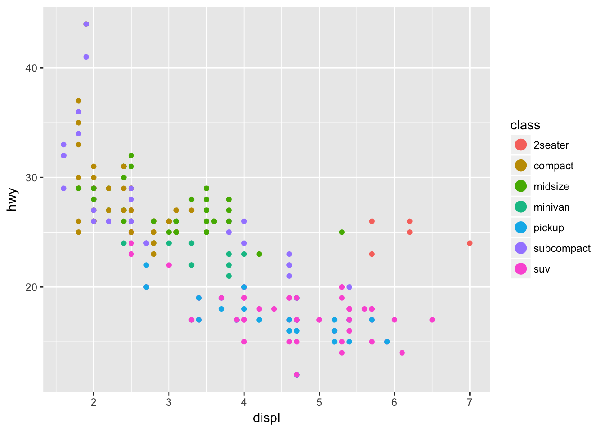
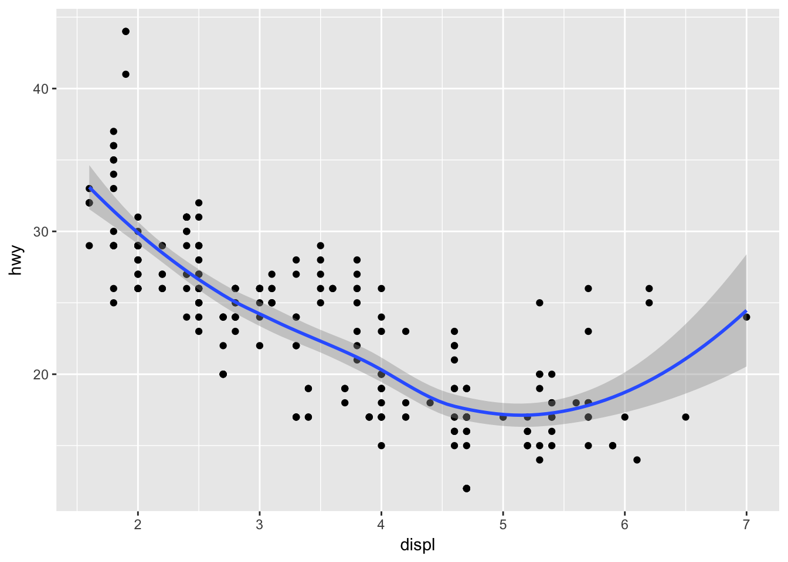

The grammar of graphics
This page is a summary of A Layered Grammar of Graphics by Hadley Wickham. I strongly encourage you to read the original article in conjunction with this summary.
library(tidyverse)
library(knitr)Google defines a grammar as “the whole system and structure of a language or of languages in general, usually taken as consisting of syntax and morphology (including inflections) and sometimes also phonology and semantics”.1 Others consider a grammar to be “the fundamental principles or rules of an art or science”.2 Applied to visualizations, a grammar of graphics is a grammar used to describe and create a wide range of statistical graphics.3
The layered grammar of graphics approach is implemented in ggplot2, a widely used graphics library for R. All graphics in this library are built using a layered approach, building layers up to create the final graphic.
Components of the layered grammar of graphics
- Layer
- Data
- Mapping
- Statistical transformation (stat)
- Geometric object (geom)
- Position adjustment (position)
- Scale
- Coordinate system (coord)
- Faceting (facet)
- Defaults
- Data
- Mapping
Layer
Layers are used to create the objects on a plot. They are defined by five basic parts:
- Data
- Mapping
- Statistical transformation (stat)
- Geometric object (geom)
- Position adjustment (position)
Layers are typically related to one another and share many common features. For instance, multiple layers can be built using the same underlying data. An example would be a scatterplot overlayed with a smoothed regression line to summarize the relationship between two variables:

Data and mapping
Data defines the source of the information to be visualized, but is independent from the other elements. So a layered graphic can be built which utilizes different data sources while keeping the other components the same.
For our running example, let’s use the mpg dataset in the ggplot2 package.4
head(x = mpg) %>%
kable(caption = "Dataset of automobiles")| manufacturer | model | displ | year | cyl | trans | drv | cty | hwy | fl | class |
|---|---|---|---|---|---|---|---|---|---|---|
| audi | a4 | 1.8 | 1999 | 4 | auto(l5) | f | 18 | 29 | p | compact |
| audi | a4 | 1.8 | 1999 | 4 | manual(m5) | f | 21 | 29 | p | compact |
| audi | a4 | 2.0 | 2008 | 4 | manual(m6) | f | 20 | 31 | p | compact |
| audi | a4 | 2.0 | 2008 | 4 | auto(av) | f | 21 | 30 | p | compact |
| audi | a4 | 2.8 | 1999 | 6 | auto(l5) | f | 16 | 26 | p | compact |
| audi | a4 | 2.8 | 1999 | 6 | manual(m5) | f | 18 | 26 | p | compact |
Mapping defines how the variables are applied to the plot. So if we were graphing information from mpg, we might map a car’s engine displacement to the \(x\) position and highway mileage to the \(y\) position.
mpg %>%
select(displ, hwy) %>%
rename(x = displ,
y = hwy)## # A tibble: 234 x 2
## x y
## <dbl> <int>
## 1 1.8 29
## 2 1.8 29
## 3 2.0 31
## 4 2.0 30
## 5 2.8 26
## 6 2.8 26
## 7 3.1 27
## 8 1.8 26
## 9 1.8 25
## 10 2.0 28
## # ... with 224 more rowsStatistical transformation
A statistical transformation (stat) transforms the data, generally by summarizing the information. For instance, in a bar graph you typically are not trying to graph the raw data because this doesn’t make any inherent sense. Instead, you might summarize the data by graphing the total number of observations within a set of categories. Or if you have a dataset with many observations, you might transform the data into a smoothing line which summarizes the overall pattern of the relationship between variables by calculating the mean of \(y\) conditional on \(x\).
A stat is a function that takes in a dataset as the input and returns a dataset as the output; a stat can add new variables to the original dataset, or create an entirely new dataset. So instead of graphing this data in its raw form:
mpg %>%
select(cyl)## # A tibble: 234 x 1
## cyl
## <int>
## 1 4
## 2 4
## 3 4
## 4 4
## 5 6
## 6 6
## 7 6
## 8 4
## 9 4
## 10 4
## # ... with 224 more rowsYou would transform it to:
mpg %>%
count(cyl)## # A tibble: 4 x 2
## cyl n
## <int> <int>
## 1 4 81
## 2 5 4
## 3 6 79
## 4 8 70Sometimes you don’t need to make a statistical transformation. For example, in a scatterplot you use the raw values for the \(x\) and \(y\) variables to map onto the graph. In these situations, the statistical transformation is an identity transformation - the stat simply passes in the original dataset and exports the exact same dataset.
Geometric objects
Geometric objects (geoms) control the type of plot you create. Geoms are classified by their dimensionality:
- 0 dimensions - point, text
- 1 dimension - path, line
- 2 dimensions - polygon, interval
Each geom can only display certain aesthetics or visual attributes of the geom. For example, a point geom has position, color, shape, and size aesthetics.
ggplot(data = mpg, mapping = aes(x = displ, y = hwy, color = class)) +
geom_point() +
ggtitle("A point geom with position and color aesthetics")
- Position defines where each point is drawn on the plot
- Color defines the color of each point. Here the color is determined by the class of the car (observation)
Whereas a bar geom has position, height, width, and fill color.
ggplot(data = mpg, aes(x = cyl)) +
geom_bar() +
ggtitle("A bar geom with position and height aesthetics")
- Position determines the starting location (origin) of each bar
- Height determines how tall to draw the bar. Here the height is based on the number of observations in the dataset for each possible number of cylinders.
Position adjustment
Sometimes with dense data we need to adjust the position of elements on the plot, otherwise data points might obscure one another. Bar plots frequently stack or dodge the bars to avoid overlap:
count(x = mpg, class, cyl) %>%
ggplot(mapping = aes(x = cyl, y = n, fill = class)) +
geom_bar(stat = "identity") +
ggtitle(label = "A stacked bar chart")
count(x = mpg, class, cyl) %>%
ggplot(mapping = aes(x = cyl, y = n, fill = class)) +
geom_bar(stat = "identity", position = "dodge") +
ggtitle(label = "A dodged bar chart")
Sometimes scatterplots with few unique \(x\) and \(y\) values are jittered (random noise is added) to reduce overplotting.
ggplot(data = mpg, mapping = aes(x = cyl, y = hwy)) +
geom_point() +
ggtitle("A point geom with obscured data points")
ggplot(data = mpg, mapping = aes(x = cyl, y = hwy)) +
geom_jitter() +
ggtitle("A point geom with jittered data points")
Scale
A scale controls how data is mapped to aesthetic attributes, so we need one scale for every aesthetic property employed in a layer. For example, this graph defines a scale for color:
ggplot(data = mpg, mapping = aes(x = displ, y = hwy, color = class)) +
geom_point() +
guides(color = guide_legend(override.aes = list(size = 4)))
Note that the scale is consistent - every point for a compact car is drawn in tan, whereas SUVs are drawn in pink. The scale can be changed to use a different color palette:
ggplot(data = mpg, mapping = aes(x = displ, y = hwy, color = class)) +
geom_point() +
guides(color = guide_legend(override.aes = list(size = 4))) +
scale_color_brewer(palette = "Dark2")
Now we are using a different palette, but the scale is still consistent: all compact cars utilize the same color, whereas SUVs use a new color but each SUV still uses the same, consistent color.
Coordinate system
A coordinate system (coord) maps the position of objects onto the plane of the plot, and controls how the axes and grid lines are drawn. Plots typically use two coordinates (\(x, y\)), but could use any number of coordinates. Most plots are drawn using the Cartesian coordinate system:
x1 <- c(1, 10)
y1 <- c(1, 5)
p <- qplot(x = x1, y = y1, geom = "blank", xlab = NULL, ylab = NULL) +
theme_bw()
p +
ggtitle(label = "Cartesian coordinate system")
This system requires a fixed and equal spacing between values on the axes. That is, the graph draws the same distance between 1 and 2 as it does between 5 and 6. The graph could be drawn using a semi-log coordinate system which logarithmically compresses the distance on an axis:
p +
coord_trans(y = "log10") +
ggtitle(label = "Semi-log coordinate system")
Or could even be drawn using polar coordinates:
p +
coord_polar() +
ggtitle(label = "Polar coordinate system")
Faceting
Faceting can be used to split the data up into subsets of the entire dataset. This is a powerful tool when investigating whether patterns are the same or different across conditions, and allows the subsets to be visualized on the same plot (known as conditioned or trellis plots). The faceting specification describes which variables should be used to split up the data, and how they should be arranged.
ggplot(data = mpg, mapping = aes(x = displ, y = hwy)) +
geom_point() +
facet_wrap(~ class)
Defaults
Rather than explicitly declaring each component of a layered graphic (which will use more code and introduces opportunities for errors), we can establish intelligent defaults for specific geoms and scales. For instance, whenever we want to use a bar geom, we can default to using a stat that counts the number of observations in each group of our variable in the \(x\) position.
Consider the following scenario: you wish to generate a scatterplot visualizing the relationship between engine displacement size and highway fuel efficiency. With no defaults, the code to generate this graph is:
ggplot() +
layer(
data = mpg, mapping = aes(x = displ, y = hwy),
geom = "point", stat = "identity", position = "identity"
) +
scale_x_continuous() +
scale_y_continuous() +
coord_cartesian()
The above code:
- Creates a new plot object (
ggplot) - Adds a layer (
layer)- Specifies the data (
mpg) - Maps engine displacement to the \(x\) position and highway mileage to the \(y\) position (
mapping) - Uses the point geometric transformation (
geom = "point") - Implements an identity transformation and position (
stat = "identity"andposition = "identity")
- Specifies the data (
- Establishes two continuous position scales (
scale_x_continuousandscale_y_continuous) - Declares a cartesian coordinate system (
coord_cartesian)
How can we simplify this using intelligent defaults?
- We only need to specify one geom and stat, since each geom has a default stat.
- Cartesian coordinate systems are most commonly used, so it should be the default.
- Default scales can be added based on the aesthetic and type of variables.
- Continuous values are transformed with a linear scaling.
- Discrete values are mapped to integers.
- Scales for aesthetics such as color, fill, and size can also be intelligently defaulted.
Using these defaults, we can rewrite the above code as:
ggplot() +
geom_point(data = mpg, mapping = aes(x = displ, y = hwy))
This generates the exact same plot, but uses fewer lines of code. Because multiple layers can use the same components (data, mapping, etc.), we can also specify that information in the ggplot() function rather than in the layer() function:
ggplot(data = mpg, mapping = aes(x = displ, y = hwy)) +
geom_point()
And as we will learn, function arguments in R use specific ordering, so we can omit the explicit call to data and mapping:
ggplot(mpg, aes(displ, hwy)) +
geom_point()
With this specification, it is easy to build the graphic up with additional layers, without modifying the original code:
ggplot(mpg, aes(displ, hwy)) +
geom_point() +
geom_smooth()## `geom_smooth()` using method = 'loess' and formula 'y ~ x'
Because we called aes(displ, hwy) within the ggplot() function, it is automatically passed along to both geom_point() and geom_smooth(). If we fail to do this, we get an error:
ggplot(mpg) +
geom_point(aes(displ, hwy)) +
geom_smooth()## `geom_smooth()` using method = 'loess' and formula 'y ~ x'## Error: stat_smooth requires the following missing aesthetics: x, y
Session Info
devtools::session_info()## Session info -------------------------------------------------------------## setting value
## version R version 3.4.3 (2017-11-30)
## system x86_64, darwin15.6.0
## ui RStudio (1.1.447)
## language (EN)
## collate en_US.UTF-8
## tz America/Chicago
## date 2018-05-23## Packages -----------------------------------------------------------------## package * version date
## abind 1.4-5 2016-07-21
## assertthat 0.2.0 2017-04-11
## babynames * 0.3.0 2017-04-14
## backports 1.1.2 2017-12-13
## base * 3.4.3 2017-12-07
## base64enc 0.1-3 2015-07-28
## bigrquery * 0.4.1 2017-06-26
## bindr 0.1.1 2018-03-13
## bindrcpp * 0.2.2 2018-03-29
## bit 1.1-12 2014-04-09
## bit64 0.9-7 2017-05-08
## bitops 1.0-6 2013-08-17
## blob 1.1.1 2018-03-25
## boot * 1.3-20 2017-08-06
## broom * 0.4.4 2018-03-29
## callr 2.0.3 2018-04-11
## caret * 6.0-79 2018-03-29
## cellranger 1.1.0 2016-07-27
## class 7.3-14 2015-08-30
## cli 1.0.0 2017-11-05
## clipr 0.4.0 2017-11-03
## codetools 0.2-15 2016-10-05
## colorspace 1.3-2 2016-12-14
## compiler 3.4.3 2017-12-07
## config 0.3 2018-03-27
## crayon 1.3.4 2017-10-03
## curl * 3.2 2018-03-28
## CVST 0.2-1 2013-12-10
## datasets * 3.4.3 2017-12-07
## DBI 0.8 2018-03-02
## dbplyr 1.2.1 2018-02-19
## ddalpha 1.3.2 2018-04-08
## debugme 1.1.0 2017-10-22
## DEoptimR 1.0-8 2016-11-19
## devtools 1.13.5 2018-02-18
## digest 0.6.15 2018-01-28
## dimRed 0.1.0 2017-05-04
## dplyr * 0.7.4 2017-09-28
## DRR 0.0.3 2018-01-06
## e1071 * 1.6-8 2017-02-02
## emo 0.0.0.9000 2017-10-03
## evaluate 0.10.1 2017-06-24
## FNN * 1.1 2013-07-31
## forcats * 0.3.0 2018-02-19
## foreach * 1.4.4 2017-12-12
## foreign 0.8-69 2017-06-22
## gam * 1.15 2018-02-25
## gapminder * 0.3.0 2017-10-31
## gbm * 2.1.3 2017-03-21
## geometry 0.3-6 2015-09-09
## geosphere 1.5-7 2017-11-05
## gganimate * 0.1.0.9000 2017-05-26
## ggmap * 2.6.1 2016-01-23
## ggplot2 * 2.2.1.9000 2018-05-18
## ggrepel * 0.7.0 2017-09-29
## ggstance * 0.3 2016-11-16
## glue 1.2.0 2017-10-29
## gower 0.1.2 2017-02-23
## graphics * 3.4.3 2017-12-07
## grDevices * 3.4.3 2017-12-07
## grid 3.4.3 2017-12-07
## gridExtra * 2.3 2017-09-09
## gtable 0.2.0 2016-02-26
## gutenbergr * 0.1.4 2018-01-26
## h2o * 3.16.0.2 2017-12-01
## haven * 1.1.1 2018-01-18
## here * 0.1 2017-05-28
## hexbin * 1.27.2 2018-01-15
## highr 0.6 2016-05-09
## hms 0.4.2 2018-03-10
## htmltools 0.3.6 2017-04-28
## htmlwidgets 1.2 2018-04-19
## httpuv 1.3.6.2 2018-03-02
## httr * 1.3.1 2017-08-20
## igraph 1.2.1 2018-03-10
## ipred 0.9-6 2017-03-01
## ISLR * 1.2 2017-10-20
## iterators 1.0.9 2017-12-12
## janeaustenr 0.1.5 2017-06-10
## jpeg 0.1-8 2014-01-23
## jsonlite * 1.5 2017-06-01
## kernlab 0.9-25 2016-10-03
## kknn * 1.3.1 2016-03-26
## knitr * 1.20 2018-02-20
## labeling 0.3 2014-08-23
## lattice * 0.20-35 2017-03-25
## lava 1.6.1 2018-03-28
## lazyeval 0.2.1 2017-10-29
## lubridate * 1.7.4 2018-04-11
## lvplot * 0.2.0 2016-05-01
## magic 1.5-8 2018-01-26
## magrittr 1.5 2014-11-22
## mapproj 1.2.6 2018-03-29
## maps * 3.3.0 2018-04-03
## MASS 7.3-49 2018-02-23
## Matrix 1.2-14 2018-04-09
## MatrixModels * 0.4-1 2015-08-22
## memoise 1.1.0 2017-04-21
## methods * 3.4.3 2017-12-07
## microbenchmark * 1.4-4 2018-01-24
## mime 0.5 2016-07-07
## miniUI 0.1.1 2016-01-15
## mnormt 1.5-5 2016-10-15
## ModelMetrics 1.1.0 2016-08-26
## modelr * 0.1.1 2017-08-10
## modeltools 0.2-21 2013-09-02
## munsell 0.4.3 2016-02-13
## nlme 3.1-137 2018-04-07
## NLP 0.1-11 2017-08-15
## nnet * 7.3-12 2016-02-02
## nycflights13 * 0.2.2 2017-01-27
## openssl 1.0.1 2018-03-03
## parallel * 3.4.3 2017-12-07
## pillar 1.2.1 2018-02-27
## pkgconfig 2.0.1 2017-03-21
## plyr 1.8.4 2016-06-08
## png 0.1-7 2013-12-03
## pROC * 1.11.0 2018-03-25
## prodlim 1.6.1 2017-03-06
## profvis * 0.3.5 2018-02-22
## proto 1.0.0 2016-10-29
## psych 1.8.3.3 2018-03-30
## purrr * 0.2.4 2017-10-18
## quantreg * 5.35 2018-02-02
## R6 2.2.2 2017-06-17
## randomForest * 4.6-14 2018-03-25
## rappdirs 0.3.1 2016-03-28
## rcfss * 0.1.5 2018-05-01
## Rcpp 0.12.16 2018-03-13
## RcppRoll 0.2.2 2015-04-05
## RCurl 1.95-4.10 2018-01-04
## readr * 1.1.1 2017-05-16
## readxl * 1.0.0 2017-04-18
## rebird * 0.4.0 2017-04-26
## recipes 0.1.2 2018-01-11
## reprex * 0.2.0 2018-04-09
## reshape2 1.4.3 2017-12-11
## RgoogleMaps 1.4.1 2016-09-18
## rjson 0.2.15 2014-11-03
## rlang 0.2.0.9001 2018-05-18
## rmarkdown 1.9 2018-03-01
## robustbase 0.92-8 2017-11-01
## rpart 4.1-13 2018-02-23
## rprojroot 1.3-2 2018-01-03
## rsconnect 0.8.8 2018-03-09
## rsparkling * 0.2.3 2018-03-08
## RSQLite * 2.1.0 2018-03-29
## rstudioapi 0.7 2017-09-07
## rtweet * 0.6.0 2017-11-16
## rvest * 0.3.2 2016-06-17
## scales * 0.5.0.9000 2018-05-18
## sfsmisc 1.1-2 2018-03-05
## shiny * 1.0.5 2017-08-23
## slam 0.1-42 2017-12-21
## SnowballC 0.5.1 2014-08-09
## sp 1.2-7 2018-01-19
## sparklyr * 0.7.0 2018-01-23
## SparseM * 1.77 2017-04-23
## splines * 3.4.3 2017-12-07
## stats * 3.4.3 2017-12-07
## stats4 3.4.3 2017-12-07
## stringi 1.1.7 2018-03-12
## stringr * 1.3.0 2018-02-19
## survival * 2.41-3 2017-04-04
## tibble * 1.4.2 2018-01-22
## tidyr * 0.8.0 2018-01-29
## tidyselect 0.2.4 2018-02-26
## tidytext * 0.1.8.900 2018-05-10
## tidyverse * 1.2.1 2017-11-14
## timeDate 3043.102 2018-02-21
## titanic * 0.1.0 2015-08-31
## tm 0.7-3 2017-12-06
## tokenizers 0.2.1 2018-03-29
## tools 3.4.3 2017-12-07
## topicmodels * 0.2-7 2017-11-03
## tree * 1.0-39 2018-03-17
## tweenr * 0.1.5 2016-10-10
## utf8 1.1.3 2018-01-03
## utils * 3.4.3 2017-12-07
## whisker 0.3-2 2013-04-28
## withr 2.1.2 2018-05-18
## XML * 3.98-1.10 2018-02-19
## xml2 * 1.2.0 2018-01-24
## xtable 1.8-2 2016-02-05
## yaml 2.1.18 2018-03-08
## source
## CRAN (R 3.4.0)
## CRAN (R 3.4.0)
## CRAN (R 3.4.0)
## CRAN (R 3.4.3)
## local
## CRAN (R 3.4.0)
## CRAN (R 3.4.1)
## CRAN (R 3.4.3)
## CRAN (R 3.4.4)
## CRAN (R 3.4.0)
## CRAN (R 3.4.0)
## CRAN (R 3.4.0)
## CRAN (R 3.4.4)
## CRAN (R 3.4.3)
## CRAN (R 3.4.3)
## CRAN (R 3.4.3)
## CRAN (R 3.4.4)
## CRAN (R 3.4.0)
## CRAN (R 3.4.3)
## CRAN (R 3.4.2)
## CRAN (R 3.4.2)
## CRAN (R 3.4.3)
## CRAN (R 3.4.0)
## local
## CRAN (R 3.4.4)
## Github (gaborcsardi/crayon@b5221ab)
## CRAN (R 3.4.4)
## CRAN (R 3.4.0)
## local
## CRAN (R 3.4.3)
## CRAN (R 3.4.3)
## CRAN (R 3.4.4)
## CRAN (R 3.4.2)
## CRAN (R 3.4.0)
## CRAN (R 3.4.3)
## CRAN (R 3.4.3)
## CRAN (R 3.4.0)
## CRAN (R 3.4.2)
## CRAN (R 3.4.3)
## CRAN (R 3.4.0)
## Github (hadley/emo@9f2e0f2)
## CRAN (R 3.4.1)
## CRAN (R 3.4.0)
## CRAN (R 3.4.3)
## CRAN (R 3.4.3)
## CRAN (R 3.4.3)
## CRAN (R 3.4.3)
## CRAN (R 3.4.2)
## CRAN (R 3.4.0)
## CRAN (R 3.4.0)
## CRAN (R 3.4.2)
## Github (dgrtwo/gganimate@bf82002)
## CRAN (R 3.4.0)
## Github (tidyverse/ggplot2@54de616)
## CRAN (R 3.4.2)
## CRAN (R 3.4.0)
## CRAN (R 3.4.2)
## CRAN (R 3.4.0)
## local
## local
## local
## CRAN (R 3.4.1)
## CRAN (R 3.4.0)
## CRAN (R 3.4.3)
## CRAN (R 3.4.3)
## CRAN (R 3.4.3)
## CRAN (R 3.4.0)
## CRAN (R 3.4.3)
## CRAN (R 3.4.0)
## CRAN (R 3.4.3)
## CRAN (R 3.4.0)
## cran (@1.2)
## CRAN (R 3.4.3)
## CRAN (R 3.4.1)
## CRAN (R 3.4.4)
## CRAN (R 3.4.0)
## CRAN (R 3.4.2)
## CRAN (R 3.4.3)
## CRAN (R 3.4.0)
## CRAN (R 3.4.0)
## CRAN (R 3.4.0)
## CRAN (R 3.4.0)
## CRAN (R 3.4.0)
## CRAN (R 3.4.3)
## CRAN (R 3.4.0)
## CRAN (R 3.4.3)
## CRAN (R 3.4.4)
## CRAN (R 3.4.2)
## CRAN (R 3.4.3)
## CRAN (R 3.4.0)
## CRAN (R 3.4.3)
## CRAN (R 3.4.0)
## CRAN (R 3.4.4)
## CRAN (R 3.4.4)
## CRAN (R 3.4.3)
## CRAN (R 3.4.4)
## CRAN (R 3.4.0)
## CRAN (R 3.4.0)
## local
## CRAN (R 3.4.3)
## CRAN (R 3.4.0)
## CRAN (R 3.4.0)
## CRAN (R 3.4.0)
## CRAN (R 3.4.0)
## local
## CRAN (R 3.4.0)
## CRAN (R 3.4.0)
## CRAN (R 3.4.4)
## CRAN (R 3.4.1)
## CRAN (R 3.4.3)
## CRAN (R 3.4.0)
## CRAN (R 3.4.3)
## local
## CRAN (R 3.4.3)
## CRAN (R 3.4.0)
## CRAN (R 3.4.0)
## CRAN (R 3.4.0)
## CRAN (R 3.4.4)
## CRAN (R 3.4.0)
## CRAN (R 3.4.3)
## CRAN (R 3.4.0)
## CRAN (R 3.4.4)
## CRAN (R 3.4.2)
## CRAN (R 3.4.3)
## CRAN (R 3.4.0)
## CRAN (R 3.4.4)
## CRAN (R 3.4.0)
## local
## CRAN (R 3.4.4)
## CRAN (R 3.4.0)
## CRAN (R 3.4.3)
## CRAN (R 3.4.0)
## CRAN (R 3.4.0)
## CRAN (R 3.4.0)
## CRAN (R 3.4.3)
## Github (tidyverse/reprex@781696d)
## CRAN (R 3.4.3)
## CRAN (R 3.4.0)
## CRAN (R 3.4.0)
## Github (r-lib/rlang@854174a)
## CRAN (R 3.4.3)
## CRAN (R 3.4.2)
## CRAN (R 3.4.3)
## CRAN (R 3.4.3)
## CRAN (R 3.4.4)
## CRAN (R 3.4.4)
## CRAN (R 3.4.4)
## CRAN (R 3.4.1)
## CRAN (R 3.4.2)
## CRAN (R 3.4.0)
## Github (hadley/scales@d767915)
## CRAN (R 3.4.4)
## cran (@1.0.5)
## CRAN (R 3.4.3)
## CRAN (R 3.4.0)
## CRAN (R 3.4.3)
## CRAN (R 3.4.3)
## CRAN (R 3.4.0)
## local
## local
## local
## CRAN (R 3.4.3)
## CRAN (R 3.4.3)
## CRAN (R 3.4.3)
## CRAN (R 3.4.3)
## CRAN (R 3.4.3)
## CRAN (R 3.4.3)
## Github (juliasilge/tidytext@b6c4ed7)
## CRAN (R 3.4.2)
## CRAN (R 3.4.3)
## CRAN (R 3.4.0)
## CRAN (R 3.4.3)
## CRAN (R 3.4.4)
## local
## CRAN (R 3.4.2)
## CRAN (R 3.4.4)
## CRAN (R 3.4.0)
## CRAN (R 3.4.3)
## local
## CRAN (R 3.4.0)
## Github (jimhester/withr@79d7b0d)
## CRAN (R 3.4.3)
## CRAN (R 3.4.3)
## CRAN (R 3.4.0)
## CRAN (R 3.4.4)Wickham, Hadley. (2010) “A Layered Grammar of Graphics”. Journal of Computational and Graphical Statistics, 19(1).↩
Wilkinson, Leland. (2005). The Grammar of Graphics. (UChicago authentication required)↩
Run
?mpgin the console to get more information about this dataset.↩
This work is licensed under the CC BY-NC 4.0 Creative Commons License.